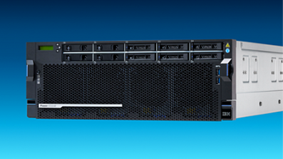
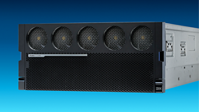

La línea IBM Power Enterprise está diseñada para organizaciones que requieren máxima disponibilidad, resiliencia, seguridad y capacidad de procesamiento para aplicaciones críticas, bases de datos, virtualización e inteligencia artificial.

Servidor empresarial de 4U diseñado para cargas de trabajo intensivas en memoria y procesamiento de datos. Con hasta 120 núcleos IBM Power11 y hasta 16 TB de memoria DDR5, permite consolidar múltiples aplicaciones críticas, simplificar operaciones y optimizar costos de infraestructura. Ideal para organizaciones que buscan escalabilidad, virtualización avanzada y continuidad operativa.

Plataforma IBM Power de gama alta diseñada para los entornos empresariales más exigentes. Ofrece capacidades avanzadas de disponibilidad continua, seguridad de nivel enterprise, virtualización masiva y procesamiento de aplicaciones core de misión crítica. Ideal para banca, seguros, telecomunicaciones y grandes centros de datos.
Nuestro equipo puede ayudarle a seleccionar la plataforma IBM Power adecuada para las necesidades de su organización.